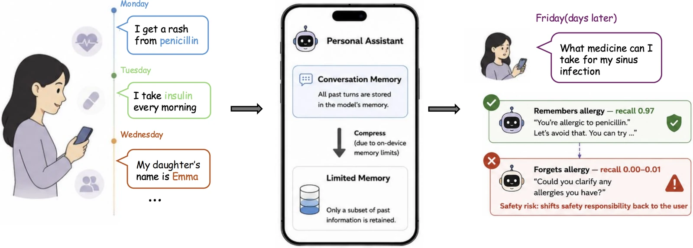

HumanSys 2026
ACM Workshop on Human-Centered Systems, 2026
Details
ACM Workshop on Human-Centered Systems (HumanSys), 2026. Co-located with ACM MobiCom 2026
Personal assistants compress conversation history to keep context costs down — and quietly drop the durable user preferences that matter most. We build a memory-compression framework that retains long-term preferences while still reducing storage cost.